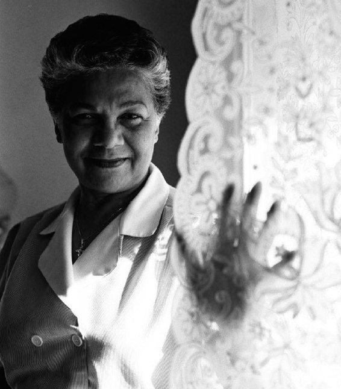

Tôi trung thành với công việc phục vụ gia đình tổng thống, nhưng tôi sẽ quay trở lại để nói rằng: “Anh có biết hôm nay họ đã làm gì không? Tôi không tin được là họ nói thế”
– Bill Hamilton, Quản lý Bộ phận quét dọn và kho, 1958–2013.
Các nhân viên tuy kín đáo nhưng vẫn là con người. Lẽ tự nhiên là họ trao đổi các câu chuyện với nhau trong giờ ăn trưa. Họ không chỉ chia sẻ những thông tin quan trọng mà còn trở nên thân thiết hơn nhờ kể cho nhau nghe những chuyện khó tin mà họ chứng kiến, và thỉnh thoảng những tình huống buồn cười mà họ bị mắc vào.
Một trong những câu chuyện ưa thích nhất của Thư ký Xã hội Bess Abell liên quan đến bộ đồ sứ của Nhà Trắng. Năm 1966, gia đình Johnson quyết định đặt làm bộ đĩa sứ mới. Phu nhân Lady Bird phối hợp chặt chẽ với các nhà thiết kế của Tiffany & Company và nhà sản xuất đồ sứ Castleton China để tạo ra những mẫu thiết kế phản ánh cam kết làm đẹp những con đường và công viên nước Mỹ của bà. Trên bộ đĩa dùng ăn tối có hình một con ó, còn mỗi viền đĩa thì được trang trí bằng hình những bông hoa dại khác nhau ở Hoa Kỳ. Đĩa ăn tráng miệng thì thể hiện hình ảnh của từng loài hoa tiêu biểu cho mỗi tiểu bang trong số năm mươi tiểu bang của Hoa Kỳ.
Khi bộ đĩa sứ được giao cho Nhà Trắng, trông chúng đẹp mê hồn, Abell hồi tưởng lại – trừ bộ đĩa ăn tráng miệng. Hình các bông hoa đặc trưng các tiểu bang trông rất xấu xí khó coi. “Chúng trông giống như bị mấy con cún ngồi đè lên”. Cô phá ra cười, như thể chỉ mới nhìn thấy chúng ngày hôm qua. Nhưng lúc đó thì chẳng có gì tức cười. Abell kinh hoàng khi nhìn thấy bộ đĩa. Cô vội chạy đến chỗ ông J.B. West để đưa cho ông xem. (West là người được lòng cả Abell và Jacqueline Kennedy. “Ông ấy rất tuyệt”, Abel nhớ lại. “Ông ấy pha món daiquiri lạnh [**] ngon chưa từng thấy, và đó là một trong những lý do khiến ông ấy và phu nhân Kennedy rất hợp ý nhau”).
[**](Hỗn hợp rum, nước chanh và đường ướp lạnh.)
Món rượu daiquiri của West “đã châm ngòi cho một trò chơi ngông rất tuyệt” trong Nhà Trắng, Abell nói. Vì tiêu chuẩn đòi hỏi tất cả những gì không hoàn hảo đều phải bị hủy nên chúng tôi đã đặt một bộ đĩa khác thay thế, sau đó thì các nhân viên tìm ra một cách tuyệt vời để hủy những chiếc đĩa hư. Thay vì ném chúng xuống sông Potomac (từ lâu vẫn được dùng làm mồ chôn đồ sứ vỡ của Nhà Trắng), họ quyết định chơi một trò rất vui. Abell, West và một vài người khác mang số đĩa đó cùng một bình daiquiri xuống hầm trú ẩn. Họ treo một cái bia tập bắn lên tường, trên đó ghi tên – và trong một vài trường hợp, cả hình biếm họa – của những nhân viên khu Cánh Tây ít được ưa thích nhất, rồi lấy đống đĩa ném vào mấy cái tên đó.
“Còn vui hơn cả đám cưới Hy Lạp”.
NĂM 1975, CỰU nhân viên Traphes Bryant trở thành một trong những người đầu tiên trong Nhà Trắng phơi bày lối sống trác táng có tiếng của Tổng thống Kennedy trong một cuốn sách. Hầu hết các nhân viên thời đó đều biết chuyện này nhưng họ quyết giữ kín sự thật để bảo vệ thể chế tổng thống Mỹ. Theo Pierre Salinger, thư ký báo chí của gia đình Kennedy, các nhân viên được yêu cầu một cách dứt khoát là “không công khai những gì có thể làm mất uy tín của Nhà Trắng trên cương vị một di tích quốc gia”. Và mặc dù ông thợ mộc Milton Frame nói mình chưa bao giờ ký một thỏa thuận bảo mật thông tin nào nhưng ông vẫn nhớ là “khi tôi được tuyển vào làm, chúng tôi được yêu cầu không tiếp xúc với báo chí hay các phương tiện truyền thông đại chúng”. Một nhân viên khác được yêu cầu ký giấy cam kết vào ngày ông nghỉ hưu là sẽ không viết hồi ký cho đến khi hết thời gian quy định (Nhà Trắng để xuất thời gian rất dài, lên đến 20 năm).
Như đã tiết lộ trong cuốn sách của Bryant, Tổng thống Kennedy luôn tận dụng những lần vắng mặt trong thời gian dài của vợ. Phu nhân tổng thống vẫn luôn tìm cách thoát khỏi sự tù túng bên trong Nhà Trắng lâu nhất có thể bằng cách đến Glen Ora, một trang trại rộng 400 mẫu Anh do hai vợ chồng bà thuê ở vùng đất chuyên về ngựa ở Virginia. (Sau này họ xây nhà gần đó. Ngôi nhà được bà đặt tên là Wexford, theo tên một hạt ở Ireland, nơi quê cha đất tổ của tổng thống).
Mỗi khi vợ vắng nhà, tổng thống lại thích khỏa thân vùng vẫy trong hồ bơi được sưởi ấm bên trong Nhà Trắng. Được xây lên năm 1933, hồ bơi này là một phần của chế độ điều trị bệnh bại liệt của Tổng thống Roosevelt. Đây là nơi ông Kennedy thường hẹn hò với các cô nhân tình của ông, trong đó có vài người là thư ký trong Nhà Trắng. Khi ông thấy các nam nhân viên nhìn ra hồ bơi qua khung cửa kính, ông liền cho làm mờ mặt kính. (Tổng thống thường yêu cầu các đầu bếp chuẩn bị sẵn một ít đồ ăn và thức uống – xúc xích nhỏ, thịt xông khói và rượu daiquiri – rồi cho họ về. Xúc xích được giữ nóng trong bình giữ nhiệt, còn bình rượu daiquiri được làm lạnh sẵn trong tủ lạnh để khách có thể tự phục vụ. “Tôi có thể lo chuyện này”, ông nói với các nhân viên bếp).
Có một lần, một nhân viên được viên quản lý yêu cầu sửa chữa cái gì đó ở hồ bơi. Vì công việc này thường được làm khi gia đình tổng thống không có ở đó nên người nhân viên cho rằng vào giờ đó không có ai ở hồ bơi. Nhưng khi mở cánh cửa dẫn vào hồ bơi ra, anh bị sốc khi nhìn thấy Dave Powers, cố vấn và cũng là bạn thân của Tổng thống Kennedy đang ngồi bên hồ bơi – không một mảnh vải che thân – cùng với hai cô thư ký của ông Kennedy. Anh nhân viên xấu hổ chạy trở ra ngoài và nghĩ rằng mình sẽ lập tức bị sa thải. Nhưng sau đó chẳng ai đả động đến việc này và câu chuyện vẫn tiếp tục là một bí mật gia đình trong suốt nhiều năm trời.
Các nhân viên đều biết rằng mỗi khi bà Jackie Kennedy đi vắng thì mọi người bị cấm lui tới tầng hai. Tuy nhiên, Bryant đã quên bẵng chuyện này khi một buổi tối ông đi thang máy lên tầng ba để kiểm tra một thiết bị. Chiếc thang máy tình cờ dừng lại ở tầng hai. “Tôi nghe được tiếng rủ rỉ rù rì của đôi uyên ương”, ông nói. Một đồng nghiệp khác của ông nhìn thấy một phụ nữ khỏa thân từ trong bếp đi ra khi anh ta lên lầu xem đã tắt ga chưa. “Khi bà Jackie vắng nhà, đi thang máy lên lầu là một chuyện rất nguy hiểm”, Bryant hồi tưởng.
Tất cả các gia nhân đều rất sốc khi nghe nói một nhân viên nữ của Phòng Chính trị đưa gia đình cô ta lên tham quan tầng hai. Khi đến phòng của tổng thống, cô ta “làm ra vẻ như không biết đó là chỗ nào và chưa nhìn thấy nơi đó bao giờ”. Thực ra, cô ta đã đến đó nhiều lần rồi.
Bryant chưa bao giờ tiết lộ với bất kỳ ai bên ngoài Nhà Trắng, kể cả vợ ông, về chuyện ngoại tình của Kennedy khi tổng thống còn đang tại chức. Nhưng các nhân viên ở dưới nhà thì không thể không xì xào bàn tán. Họ cần biết mình phải xử sự ra sao, và việc chia sẻ các thông tin cho nhau giúp họ biết được những khu vực hành lang nào cần tránh.
Cả Tổng thống Johnson cũng khiến các nhân viên xì xào bàn tán chuyện ông thích dồn các cô gái đẹp đến dự tiệc vào góc phòng và cố hôn lên má họ. Khi bữa tiệc tối kết thúc, trên mặt ông thường đầy vết son môi. Nhiều lúc Phu nhân Lady Bird, lúc đó cũng có mặt trong phòng, phải bối rối nói với chồng là: “Lyndon, mọi người đang tìm anh ở bên ngoài kìa. Anh không được bỏ mặc bạn bè”.
Mọi người đồn rằng ông Johnson “thừa kế” hai cô phóng viên mà ông Kennedy để lại. “Ông ấy nhắc đến cô này hay cô kia như là một người “nữ tính” hoặc “rất nữ tính”, thậm chí còn dành cho họ những lời khen “có cánh” khi nói với tôi rằng họ “xinh như hồ ly”, câu mà ông thường chỉ dành để khen tặng con chó Yuki yêu thích nhất của mình”, Bryant viết. Bà Lady Bird chỉ biết đứng cạnh cắn răng chịu đựng khi bị chồng trắng trợn sỉ nhục trước mặt mọi người.
Trớ trêu thay, ông Johnson lại thuộc dạng chồng chiếm hữu, chỉ muốn vợ biết một mình mình. Có một ngày, Bryant, lúc đó còn đang là thợ điện, được yêu cầu đến phòng bà Lady Bird để nối dây cho chiếc bàn nail của bà. Nhưng ổ cắm lại nằm phía sau chiếc bàn trang điểm, nơi đệ nhất phu nhân đang ngồi. Vì thế, Bryant phải nằm dài xuống sàn, gần như ngay bên dưới đệ nhất phu nhân để cắm dây vào ổ điện.
Vừa lúc đó, Johnson lên lầu và bước vào phòng. Tổng thống “há hốc mồm” khi nhìn thấy cảnh đó và trông đúng dạng “một lão chồng đang ghen”. Bryant lắp bắp: “Thưa ngài tổng thống, tôi đang nối dây cho bàn nail của phu nhân”.
Bà Lady Bird có vẻ thích thú khi được một lần lật ngược thế cờ.
THỈNH THOẢNG, CÁC khách mời Nhà Trắng lại muốn đem về nhà một chút gì đó mang giá trị lịch sử.
Mỗi khi có tiệc tối cấp quốc gia, Quản lý Skip Allen thường đến góc phía nam của Phòng Quốc yến để kiểm tra xem có ly nào chưa rót rượu không. Ông cũng luôn chuẩn bị sẵn một bộ dao nĩa bạc cùng một ít khăn ăn khác để lỡ có ai làm rơi nĩa thì ông sẽ có thể gần như lập tức đưa một chiếc nĩa mới cho họ. Và thỉnh thoảng ông lại bắt gặp một người khách lén lút nhét thứ gì đó vào túi xách của họ.
Các gia nhân không bao giờ hỏi trực tiếp khách xem họ có lấy một món đồ sứ hay món đồ bạc nào đó không. Họ chỉ khiến người khách đó cảm thấy xấu hổ mà đưa trả lại cho họ bằng cách giả vờ ngớ ngẩn và lịch sự hỏi họ những món đó đâu. “Khi ta thu dọn đĩa, ta bảo họ cho ta dọn dao nĩa và nếu như dao hay nĩa không có ở đó, ta sẽ vờ như ‘Ồ, có lẽ ông/bà đã đánh rơi nó dưới đất’ và dáo dác tìm quanh trên sàn nhà. Và thường thì họ sẽ nói ‘À, nó đây này’”.
Là trợ lý phụ trách trang phục của Jackie Kennedy, Anne Lincoln từng giúp đệ nhất phu nhân sắp xếp các cuộc hẹn với thợ làm tóc và mua y phục cho bà trước khi cô được thăng chức quản lý bộ phận phòng và được giao cho một công việc khó khăn là giữ không cho giá thực phẩm lên cao. Dưới thời Kennedy, việc lấy trộm một vật kỷ niệm rất thường xuyên xảy ra. Cô nhớ có lần khi đến cuối bữa tiệc trưa, có đến mười lăm chiếc muỗng bạc, hai con dao bạc và bốn cái gạt tàn bạc không cánh mà bay. “Nhiều người đến đây với suy nghĩ là thứ đó thuộc về họ và tự tiện lấy nó đi”. Cô nhớ có một lần, vị đệ nhất phu nhân bình thường vẫn ăn nói dịu dàng đã phải tỏ thái độ. “Một tối, bà ấy nhìn thấy một người khách nhét con dao bạc mạ vàng vào túi quần ông ta”, Lincoln nói. Sau khi mọi người ăn xong nhưng trước khi khách khứa ra về, bà bảo Quản lý Tổ Phục vụ Charles Ficklin kiểm lại từng món trong bộ đồ ăn. Khi Charles báo lại là thiếu mất một con dao, phu nhân Kennedy đi thẳng tới chỗ người khách đang đứng sững sờ và hỏi xin lại con dao. Ông ta đưa ngay cho bà không chút chần chừ.
Jackie biết cách trình bày bàn ăn và chọn món ăn ngon nhưng không biết nấu nướng. Lincoln chưa thấy bà vào bếp chuẩn bị bữa tối hay bữa ăn nhẹ ban đêm bao giờ. Tổng thống Kennedy cũng chẳng biết gì về bếp núc. “Tổng thống thích dùng súp trước khi đi ngủ nên chúng tôi để sẵn một cái mở đồ hộp trên tầng hai – tôi nghĩ là ông ấy đã mất khoảng tám tháng mới học được cách sử dụng nó”, Lincoln nói. “Tôi cũng không nghĩ đệ nhất phu nhân biết cách sử dụng cái mở đồ hộp”. Các nhân viên phục vụ đã phá lên cười khi nói với Lincoln sáng hôm sau: “Tội nghiệp tổng thống. Tối hôm qua ông ấy lại gặp rắc rối với cái mở đồ hộp”.
Giữa tháng 10 năm 1963, vài tuần trước khi chồng bị ám sát và không lâu sau ngày bé Patrick bị sinh non và mất vào mùa hè năm đó, Jackie gọi người tổng quản lý vào phòng bà. “Ồ, ông West”, bà thì thào bằng giọng trẻ thơ, “Tôi đang có chuyện rắc rối. Ông giúp tôi giải quyết việc này được không?” Số là bà lỡ ngỏ lời mời một vị công chúa đến chơi và ở qua đêm trên tầng hai, nhưng sau đó hai vợ chồng bà thay đổi ý định và muốn dành thời gian cho nhau. Sự ra đi của cậu con trai khiến họ trở nên khăng khít hơn. “Ông có thể giúp chúng tôi nghĩ ra chuyện gì đó để bà ấy không ở lại không?”, bà năn nỉ.
Jackie đã lên kế hoạch thật tỉ mỉ để không phải tiếp khách. Bà nhờ ông West làm sao cho Phòng Nữ hoàng và Phòng Lincoln, hai phòng ngủ duy nhất thích hợp cho các hoàng thân quốc thích ở lại qua đêm, trông giống như đang trong quá trình trang trí lại để vị khách đó không thể ở lại Nhà Trắng.
“Mắt bà ấy ánh lên vẻ tinh quái khi tưởng tượng ra trò lừa gạt tinh vi ấy”, West viết.
West gọi điện cho cậu em trai của Reds là Bonner Arrington ở Phòng Mộc và trình bày kế hoạch cho anh ta:
“Cậu mang một ít bạt che bụi lên Phòng Nữ hoàng và Phòng Lincoln, sau đó cuộn thảm và che toàn bộ rèm cửa, chân đèn và tất cả đồ đạc lại. Phải rồi, đem cả thang xếp lên đó nữa”.
Sau đó, ông gọi cho cánh thợ sơn và kêu họ đem lên mỗi phòng sáu thùng sơn, trong đó có hai thùng (không) sơn trắng nhạt cho mỗi phòng, cùng mấy cây cọ đang sơn dở. Ông cũng đem lên đó vài chiếc gạt tàn chứa đầy các mẩu thuốc lá hút dở để trông như các thợ sơn ở đây đang làm việc cật lực. Để chứng minh các nhân viên ở Nhà Trắng biết tuân lệnh cấp trên và tin tưởng lẫn nhau, tất cả những ai liên quan đến cái kế hoạch phức tạp này đều không được đặt câu hỏi.
Khi công chúa đến, cô được tổng thống dẫn đi tham quan một vòng Nhà Trắng. Khi đến Phòng Nữ hoàng, ông Kennedy chỉ vào mấy thùng sơn cùng mấy tấm bạt che bụi ở đó và nói: “Đây là nơi Công chúa sẽ ở qua đêm nếu Jackie không cho trang trí lại”, ông thở dài thườn thượt.
Sáng hôm sau, đệ nhất phu nhân gọi điện cho West và rúc rích cười cảm ơn ông. “Tổng thống suýt phá ra cười khi nhìn thấy mấy cái gạt tàn thuốc đó”, bà nói.
VỢ CHỒNG ARRINGTON chưa kịp mừng kỷ niệm 60 năm ngày cưới của họ thì Reds đã qua đời năm 2007. “Chúng tôi đã sống rất hạnh phúc”, bà Margaret, vợ ông, trìu mến nói.
Những câu chuyện ông kể cho bà nghe về thời gian 33 năm làm thợ ống nước ở Nhà Trắng dưới bảy đời tổng thống, bà rất thích kể lại chúng vì chúng giúp hồi ức về ông luôn sống động. Một số chuyện liên quan đến thói quen kỳ quặc của các tổng thống, chẳng hạn như Tổng thống JFK có thói quen nhờ Reds vặn sẵn nước vào đầy bồn tắm từ tối hôm trước để sáng hôm sau ông có thể tiết kiệm thời gian bằng cách chỉ vặn thêm nước nóng bên trên. Hay chuyện cô bảo mẫu của gia đình Kennedy, Maud Shaw, cuống cuồng gọi cho Reds sau khi lỡ giật nước bồn cầu làm cái tã của John–John bị cuốn trôi.
Trước khi mất, Reds kể lại trong một cuộc phỏng vấn việc ông suýt gánh cơn thịnh nộ của Lyndon Johnson và nếu như không có sự can thiệp của người hầu riêng của tổng thống thì có lẽ ông đã bị mất việc. Một tối, Reds ở lại trễ để chữa hệ thống bơm cho chiếc vòi sen nổi tiếng của LJB bằng keo làm khít ống nước. Sáng hôm sau, ông nhận được một cuộc gọi từ người hầu của ông Johnson.
“Reds, anh và nhân viên của anh liệu hồn lên đây làm sạch các đầu vòi sen liền đi. Sáng nay lúc tổng thống tắm xong, khắp lưng ông ấy đầy màu xanh của keo ống nước”. Rồi anh nói thêm: “Tôi chưa nói gì với ông ấy, chỉ lấy khăn lau khô người cho ông ấy thôi”. Nhưng vì tổng thống vẫn thường hay mát–xa mỗi sáng nên anh người hầu phải gọi điện cho nhân viên mát–xa để dặn anh ta không nói bất cứ chuyện gì khi thấy lưng tổng thống dính đầy màu xanh. “Anh đừng có hỏi ông ấy về những cái vết trên lưng ông ấy nhé”, anh người hầu dặn. “Anh chỉ cần dùng cồn hay thứ gì đó lau sạch là được, ông ấy mà biết trên lưng ông ấy dính keo đường ống thì tất cả thợ ống nước sẽ bị đuổi ngay”. Reds rất biết ơn vì ông Johnson đã không bao giờ phát hiện chuyện này, nhờ đó ông mới có thể tiếp tục làm việc thêm nhiều năm nữa ở tòa nhà mà ông yêu mến.
Reds kể cho vợ nghe rằng lúc Nữ hoàng Elizabeth Đệ nhị đến thăm Nhà Trắng, các thợ ống nước phải làm cho bà một chiếc ghế đặt khít trên mặt bồn cầu, trông gần giống như chiếc ngai vàng. “Reds nói đó mới đúng là ‘thùng phá sảnh’” [**], bà cười khúc khích.
[**](Nguyên văn tiếng Anh là Royal flush – trong chơi bài poker, xấp bài trên tay một người chơi có cùng một hoa từ con ách trở xuống. Thùng phá sảnh là đỉnh cao của bài poker.)
Trước khi Nữ hoàng đến thăm Washington năm 1976, bà đã là một vị khách thường xuyên của Nhà Trắng nên hầu hết các nhân viên trong Nhà Trắng không còn thấy bối rối khi có mặt bà. Trước khi bắt đầu dự quốc yến, theo truyền thống, vợ chồng Tổng thống Ford ra đón Nữ hoàng và Hoàng thân Philip ở lối vào Phòng Tiếp đón Phái đoàn Ngoại giao và đưa cặp vợ chồng hoàng gia này đến thang máy. Trên đường đi, họ ngừng lại ít phút ở khu nhà ở để trò chuyện với nhau trước khi dự tiệc tối.
Trong lúc đứng chờ thang máy để lên lầu thì cửa thang máy bật mở. Xuất hiện trước mặt họ là cậu con trai 24 tuổi của tổng thống, Jack Ford, trong bộ quần jean áo thun, kiểu trang phục không mấy phù hợp để chào đón các vị khách hoàng tộc. Không chút chần chừ, Nữ hoàng quay sang bà Betty Ford nói: “Đừng lo, Betty, ở nhà tôi cũng có một người như vậy”. Dĩ nhiên người bà muốn ám chỉ ở đây là Thái tử Charles, con trai bà.
NGÀY 21 THÁNG 12 năm 1970, có một vị khách bất ngờ ghé thăm Nhà Trắng theo một kiểu khác thường, một chuyện chẳng thể nào xảy ra với tình hình cảnh giới an ninh cao như ngày nay. Đó là ngày Elvis Presley ngẫu hứng muốn gặp mặt Tổng thống Nixon (anh ta có một yêu cầu kỳ lạ là trở thành một nhân viên Liên bang chìm) nhưng không biết làm sao lại đi nhầm vào một văn phòng lúc đó đang tổ chức một bữa tiệc nhỏ.
Bill Cliber cùng một nhóm nhân viên đang hát bài “Happy Birthday to You” để mừng sinh nhật một nhân viên quản lý mỹ thuật trong căn phòng làm việc bé xíu ở tầng trệt thì bất chợt nhìn thấy Elvis cùng đám cận vệ của anh ta đứng ở ngưỡng cửa.

IVANIZ SILVA
“Tôi chỉ muốn chúc mừng sinh nhật thôi!” siêu sao giải trí của Mỹ nói.
Cả phòng im bặt, miệng há hốc.
“Tất cả mọi người đều chết lặng”, Cliber nhớ lại, lắc lắc đầu như không thể tin vào chuyện đó.
Một phút sau, một sĩ quan cảnh sát Nhà Trắng đến vỗ vai Presley và hỏi anh ta xem có ai trong số các cận vệ của anh ta mang súng không.
“Có”, Presley trả lời.
“Anh có thể để khẩu súng đó lại chỗ tôi trong khi đi gặp ngài tổng thống được không?”
“Tất nhiên”, Presley nói giọng thoải mái. “Ralph, đưa súng của cậu cho ông ấy”. Tuy nhiên, chẳng biết làm sao mà Presley vẫn lén đưa được một khẩu Colt 45 vào trong và đem tặng nó cho vị tổng thống bối rối.
Bà hầu phòng Ivaniz Silva gần như lúc nào cũng chỉ làm việc trên tầng hai và tầng ba, khu sinh sống của gia đình tổng thống. Bình thường, mọi thứ vẫn diễn ra suôn sẻ bởi các nhân viên làm phòng luôn nắm rõ lúc nào tổng thống và phu nhân không có mặt ở tầng hai và tầng ba để họ có thể lên đó làm việc mà không làm phiền đến họ. Nhưng một buổi chiều, mọi chuyện diễn ra không như họ tính.
Thường thì Nhà Trắng giao cho khoảng bốn nhân viên làm phòng phụ trách khu nhà ở: hai người làm sáng, hai người làm chiều. Có một ngày Silva, nay đã 76 tuổi, vào phòng ngủ của Tổng thống Reagan sau 5 giờ 30 để chỉnh trang giường ngủ và kéo rèm cửa lại. Nhưng khi bước vào căn phòng khách nhỏ trong phòng ngủ, bà không tin vào mắt mình khi nhìn thấy tổng thống đang ngồi đọc báo, trên người không mảnh vải che thân.
“Tôi đi vào phòng khách và thấy ông ấy trần truồng ngồi đó giữa đống báo chí”, bà nói. Bà đỏ mặt chạy ào ra ngoài trước khi tổng thống kịp nói lời nào. Ông hẳn cũng ngạc nhiên không kém gì bà.
Một lúc sau, khi bà đi ngang qua ông trong hành lang, Reagan nháy mắt nhìn bà. “Này, cái gã đó là ai thế?”, ông hỏi.
“Tôi không biết, thưa ngài”, bà cười ngượng nghịu.
Đến bây giờ, Silva vẫn còn thấy bối rối vì chuyện này. “Ông ấy biết tôi nhìn thấy ông ấy khỏa thân nên phải nói cái gì đó”.
Reagan có thể hơi bối rối lúc đó, nhưng theo những gì người ta nói thì ông khá thoải mái với chuyện trần như nhộng, ngay cả khi chuyện này làm các nhân viên rất nản. Khoảng một tháng sau khi Reagan nhậm chức, Quản lý Skip Allen hoàn thành khóa đào tạo của ông và được phép làm việc một mình. Có một lần, khi đang trực một mình, ông nhận được một bưu phẩm gởi riêng cho Tổng thống Reagan buộc ông phải lên lầu đưa gấp cho tổng thống ký.
Allen lên tầng hai tìm tổng thống. Không thấy ông ấy đâu, ông liền đi tìm anh người hầu của ông Reagan để hỏi xem tổng thống ở đâu.
“Ông ấy ở trong đó”, anh người hầu chỉ vào một cánh cửa đóng kín. Allen tiến đến gõ cửa.
“Ai đó?”, Reagan hét vọng ra.
“Tôi là Skip Allen ở Phòng Quản lý. Tôi có một bưu phẩm cá nhân cho ngài”.
“Vào đi”.
Khi mở cửa ra, Allen mới nhận ra đây là phòng tắm của tổng thống. Ông Reagan đang bước ra khỏi vòi sen.
“Người ông ấy vẫn còn sũng nước”, Allen nhớ lại.
“Đem lại đây”, Reagan nói. Tổng thống ký tên vào giấy và đưa cho Allen cầm xuống nhà.
Một lát sau, tức khoảng 9 giờ tối hôm đó, một gói bưu phẩm cá nhân khác lại được gởi đến cho tổng thống. Allen đã được dặn là tổng thống và phu nhân thường đi ngủ lúc 9 giờ nhưng ông không có sự lựa chọn nào khác, đành phải quấy rầy họ.
Ông e dè bước lên lầu tìm tổng thống một lần nữa. Nhìn thấy trong phòng ngủ của vợ chồng Reagan có ánh đèn, ông run tay gõ cửa phòng họ.
“Ai đó?”, bà Nancy Reagan hỏi.
“Tôi là Skip Allen ở Phòng Quản lý. Tôi có một gói bưu phẩm cho tổng thống”.
“Vào đi”.
Đúng lúc đó tổng thống bước ra khỏi phòng thay đồ, trên người chỉ mặc mỗi chiếc quần lót.
“Ồ, Ronnie, ít nhất anh cũng phải khoác cái áo ra ngoài chứ”, bà Nancy trách chồng.
Tổng thống nhìn vợ. “Mẹ nó à”, ông thân mật gọi vợ. “Bà khỏi lo. Hôm nay ông ấy thấy tôi khỏa thân một lần rồi. Bây giờ chúng tôi đã là cố nhân của nhau”. Tất cả mọi người đều cười nắc nẻ.
Ron, con trai nhà Reagan, nói rằng có lẽ bản tính thoải mái, không chú ý đến những người giúp việc xung quanh của bố mẹ anh khiến mọi người làm việc dễ dàng hơn. Gia đình Reagan đã quen với việc có các gia nhân làm việc xung quanh và không bao giờ lo lắng những người giúp việc đó nghĩ gì về họ. “Ta sẽ khó đảm nhiệm vai trò của một nhân viên phục vụ hay của một ai khác nếu người mà ta hầu hạ ý thức rõ sự hiện diện của ta. Nhưng bố mẹ tôi không phải người như vậy”.
Tuy nhiên Ron cũng thừa nhận rằng thái độ bàng quan của bố mẹ anh có thể bị cho là phi nhân hóa các gia nhân. “Thái độ đó như muốn nói rằng họ chẳng là cái thá gì bởi họ không đáng để người khác thấy ngại ngùng vì sự hiện diện của họ”. Dường như có một sự khác biệt giữa thái độ dửng dưng của vợ chồng Reagan với các nhân viên, và thái độ thoải mái không kém của ông bà George và Barbara Bush nhưng thể hiện sự tôn trọng các nhân viên hơn. Mỗi khi Tổng thống Reagan dừng lại trò chuyện với các nhân viên, ông thường chỉ nói về mình hoặc pha trò cho vui. Còn vợ chồng Tổng thống Bush thì quan tâm hơn đến đời sống các nhân viên bên ngoài cánh cửa Nhà Trắng khi thường xuyên hỏi han về gia đình họ và muốn biết họ có nhiều thời gian ở cạnh gia đình không – một hành động có thể không có ở vợ chồng Reagan.
Nếu suy nghĩ lại thì một số chuyện ở Nhà Trắng có thể mang một ý nghĩa khác. Vào khoảng cuối nhiệm kỳ tổng thống của Reagan, một người phục vụ nhớ lại, tổng thống tỏ ra không ý thức được những gì xảy ra chung quanh tại một thời điểm cấp thiết. “Tổng thống là nhân vật chính trong câu chuyện”, anh nói, “còn tôi thì lúc đó đang ở trong bếp. Đến khi nhìn ra xung quanh thì tôi đã thấy khói từ các lỗ thông hơi bay ra mù mịt”. Một người phục vụ phụ trách lò sưởi đã quên mở van khói khiến khói cuồn cuộn tràn vào căn phòng ông Reagan đang ngồi. “Tôi nghe thấy tiếng xe cứu hỏa đến và tiếng chân người chạy rầm rập lên tầng hai”.
Một lát sau, một nữ nhân viên cứu hỏa chạy xuống dưới nhà cười sặc sụa. “Có gì mà cô vui thế?” người phục vụ hỏi, ngạc nhiên khi thấy cô chẳng chút lo âu.
Khó khăn lắm cô mới trả lời được cho anh trong tiếng cười: “Anh có biết là tổng thống ngồi trên đó xem tivi và đọc báo như không có chuyện gì xảy ra không?”
“Ông ấy thậm chí còn không biết chuyện này”, người phục vụ hồi tưởng.
Lúc đó, không ai biết là tổng thống có thể đang trong giai đoạn đầu của căn bệnh Alzheimer. Các nhân viên chỉ tưởng đó là một tật kỳ lạ khác của vị tổng thống hiếm khi lo âu bấn loạn.
MỘT SỐ CHUYỆN nói xấu nhau dai dẳng nhất lại đến từ những nhân viên không ăn rơ với nhau. Làm việc ở Nhà Trắng đôi khi tạo ra những cái tôi quá lớn và nuôi dưỡng những cá tính mạnh mẽ. Nhiều nhân viên được tuyển vào, nhất là các đầu bếp, là những người có tay nghề xuất sắc. Vì thế họ luôn cho những gì mình làm là nhất thiên hạ. Tinh thần cạnh tranh đó có thể biến họ thành đối thủ của nhau trong chuyên môn, mà trường hợp điển hình gần đây nhất chính là sự hiềm khích công khai giữa Quản bếp Walter Scheib và Quản bếp bánh ngọt Roland Mesnier.
Quãng thời gian 11 năm làm việc cạnh nhau vẫn không thể làm giảm sự hằn thù giữa hai con người này, và tình trạng đó hiện vẫn tiếp diễn sau một thập niên họ rời Nhà Trắng. Mesnier, 70 tuổi, hiện đang được gia đình Carter thuê làm việc cho họ. Còn Scheib, trẻ hơn Mesnier 10 tuổi, hiện cũng đang làm việc cho gia đình Clinton. Họ ghét nhau đến nỗi thường xuyên từ chối bàn luận với nhau về những món ăn họ phải chuẩn bị. Scheib thường chỉ đưa cho Mesnier thực đơn trong tuần để Mesnier tự quyết định xem sẽ làm món tráng miệng nào đi kèm với các món ăn trong thực đơn. Scheib thừa nhận ông ít thích giao du bè bạn hơn Mesnier, và điều hành căn bếp của mình giống như một chỉ huy quân đội hơn. (“Nếu tôi muốn có bạn”, ông nói, “tôi sẽ làm tình nguyện viên trong một đoàn thể thanh niên”). Trong khi đó, Mesnier, một người Pháp đầy chất nghệ sĩ, thì lại luôn trình bày các tác phẩm của mình với tất cả sự thích thú. Giáng sinh năm nào, ông cũng làm mấy chục cái bánh đủ loại để tặng cho tất cả các đồng nghiệp dựa theo ý thích của mỗi người. “Với tôi, các nhân viên không chỉ là những người giúp việc”, ông nói. “Họ còn là gia đình của tôi”.
Scheib khinh thường Mesnier vì cho rằng Mesnier “ôm mộng trở thành người nổi tiếng” khi thường xuyên viết sách và xuất hiện trên truyền hình, “ông ta muốn làm mình vĩ đại hơn các gia đình tổng thống, đúng là khốn khổ”. Còn Mesnier thì tuyên bố rằng sở dĩ một người gọn gàng chải chuốt như Scheib (trông giống một nhân viên kinh doanh hơn một đầu bếp) được tuyển là vì ông ta có vẻ ngoài lôi cuốn và khả năng ăn nói lưu loát, xứng đáng làm phát ngôn viên cho bà Hillary Clinton trong chiến dịch quảng bá nền ẩm thực lành mạnh của Mỹ. “Tôi và Walter không hợp nhau vì tôi biết anh ta không thể nấu ăn”, ông nói với giọng khinh bỉ.
“Các nhân viên quản lý nói đùa rằng nếu có ai mà thấy tôi và Roland cùng nhau uống bia ở đâu đó thì tất cả mọi người sẽ phải quỳ xuống cầu nguyện bởi ngày tận thế đã gần kề”, Scheib nói.
Mesnier rất yêu mến người tiền nhiệm của Scheib, bếp trưởng người Pháp Pierre Chambrin. Nhưng vợ chồng Clinton đã sa thải Chambrin sau khi ông từ chối thay những món ăn Pháp nặng bụng của ông bằng một thực đơn lành mạnh hơn của nền ẩm thực Mỹ. Bà Hillary Clinton muốn quảng bá những thức ăn tốt cho sức khỏe của Mỹ, đặc biệt khi bà đang trong giai đoạn bắt tay điều chỉnh hệ thống chăm sóc sức khỏe ở nước này. Nhưng Chambrin nói rằng lý do thực sự khiến ông bị sa thải là vì ngoại hình của ông chứ không phải vì nền ẩm thực. “Tôi là người Pháp, tôi rất béo và tiếng Anh của tôi thì dở tệ. Tôi không phù hợp với hình ảnh họ muốn đưa ra cho người Mỹ”.
Với gia đình Clinton thì “thực phẩm chỉ là nhiên liệu” không hơn không kém, Chambrin nói với tôi. “Ngay từ đầu, tôi đã biết mình sẽ tiêu đời với vợ chồng Clinton. Tôi đã làm mọi thứ họ muốn. Tôi thậm chí còn cố làm vừa lòng họ bằng một thực đơn không bơ, không chất béo và không ghi tiếng Pháp trong đó. Nhưng làm sao mà ta có thể nói món sauté (chiên xào) mà không xài từ sauté chẳng hạn?”
Chambrin căm ghét sự hờ hững của gia đình Clinton đối với thức ăn. Khác với gia đình Bush, gia đình Clinton muốn ăn ở trong bếp. “Khi chúng tôi đổi từ gia đình Bush sang gia đình Clinton, cứ như chúng tôi chuyển từ người giàu sang người mạt hạng”.
Khi Scheib được đưa vào thế chỗ Chambrin, căn bếp tù túng ở Tầng Trệt trở thành một nơi rất khó làm việc. Bằng một giọng không chút hài hước, Bếp trưởng John Moeller, người bắt đầu đến làm ở Nhà Trắng không lâu sau ngày Mesnier có một căn bếp bánh ngọt nhỏ của riêng ông, nói rằng: “Nếu ông ấy mà còn ở lại căn bếp chính và làm việc sát sườn với chúng tôi, chắc có ngày sẽ có người đổ máu”.